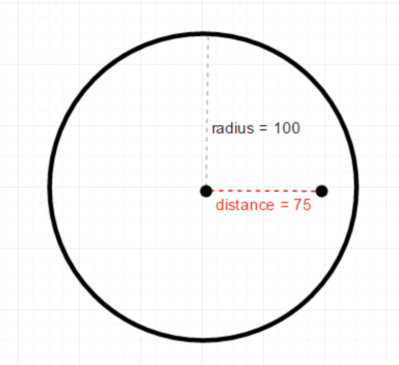
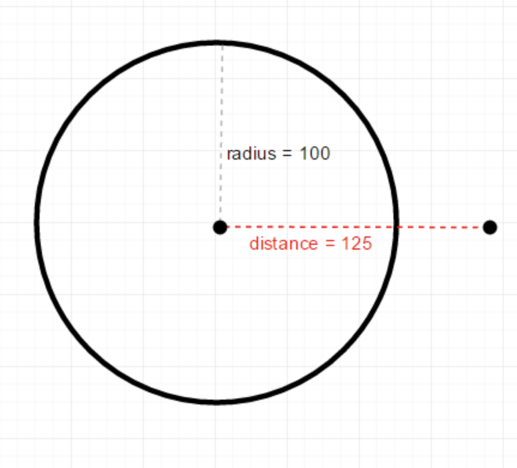
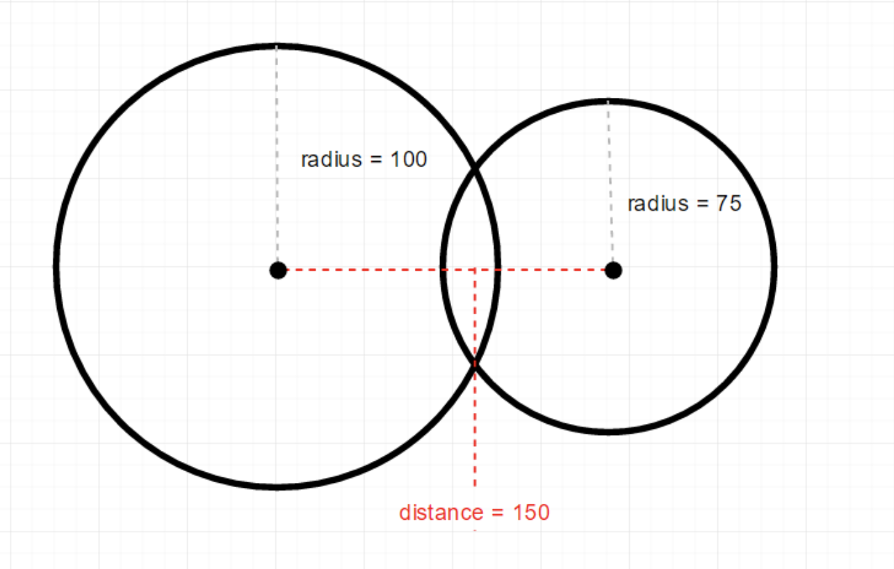
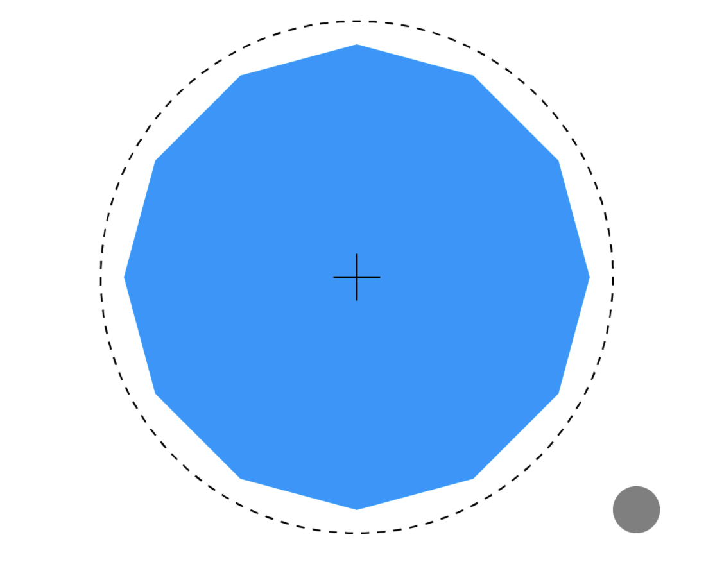

The easiest collision to test is between two points. To test if they are touching, we simply check to see if their x and y coordinates are the same!
if (x1 == x2 && y1 == y2) {
// points are in the same place: collision!
}
else {
// not colliding
}
We can then wrap this code up in a function to make the it more usable. As arguments, we pass the x,y coordinates for both points. The function returns a boolean value of true or false, depending on whether there is a collision or not.
boolean pointPoint(int x1, int y1, int x2, int y2) {
if (x1 == x2 && y1 == y2) {
return true;
}
return false;
}
See the example pointPointCollision.pde which uses the mouse to collide the two points!
Important! The exact comparison of two variables (e. g.x1==x2) works best if both variables are of the type integer. See the example dangerrousProgram.pde for the explanation.
Point/Point collision was very easy, but from here on out we’ll need some basic math to check if objects are touching each other. Testing if a point is inside a circle requires us to calculate some distances. Fortunately, Processing has a built-in function dist() which takes the coordinates between two points and calculates the distance between those points, https://processing.org/reference/dist_.html
How does it help with collision detection? Think about the relationship between the radius of the circle and the distance between the center of the circle and the point. If the distance between the center of the circle and the point is less than the radius of the circle, then that point is inside the circle!

If the distance between the center of the circle and the point is more than the radius of the circle, then that point is outside the circle!

See pointCircleCollision.pde example for the details.
Now that we know how to detect whether a point is colliding with a circle, we can expand that to detect when a circle collides with another circle. The idea is the same: we still check the distance between the points (the centers of the circles). But instead of checking against the radius of only one circle, we check against the sum of the radiuses of both circles. If the distance between the centers of the circle is less than the sum of the radiuses, then the circles are colliding!
Visualizing it, let’s draw out two non-colliding circles, their radiuses, and the distance between their centers:
Notice that the distance between their centers (200) is greater than the sum of their radiuses (175), so we know these circles are not colliding. On the other hand:

In this case, the distance between their centers (150) is less than the sum of their radiuses (175), so we know these circles are colliding. Again, the best thing you can do is draw a bunch of examples yourself to see the pattern.
Putting this into code, we still use the dist() function to get the distance between the points, but now we compare it to the sum of the radii (plural for radius).
See circleCircleCollision.pde example for details.
Circle/Circle collision can be used to create “bounding circles” around more complex objects. While sacrificing accuracy, this kind of collision detection is very fast and can be a good approximation.

While it includes some areas that aren’t part of the shape, a circle above is a good approximation of the dodecagon.
You may be wondering why we are only talking about circles and not ellipses. It might seem fairly similar, but the math for ellipse collision is actually quite complicated. Consider it a great challenge once you master the other collision examples!